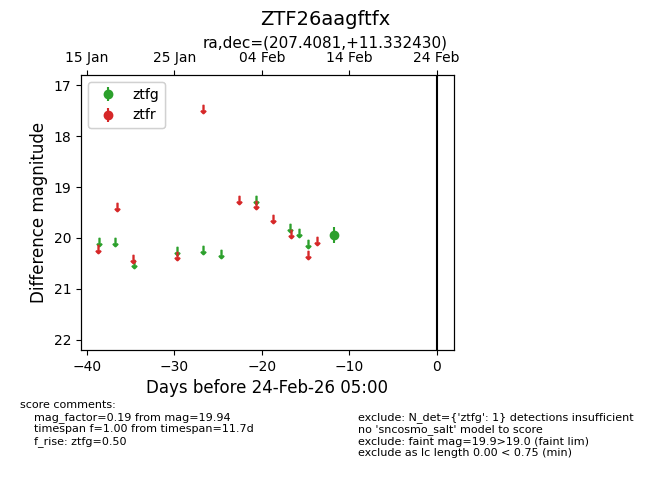
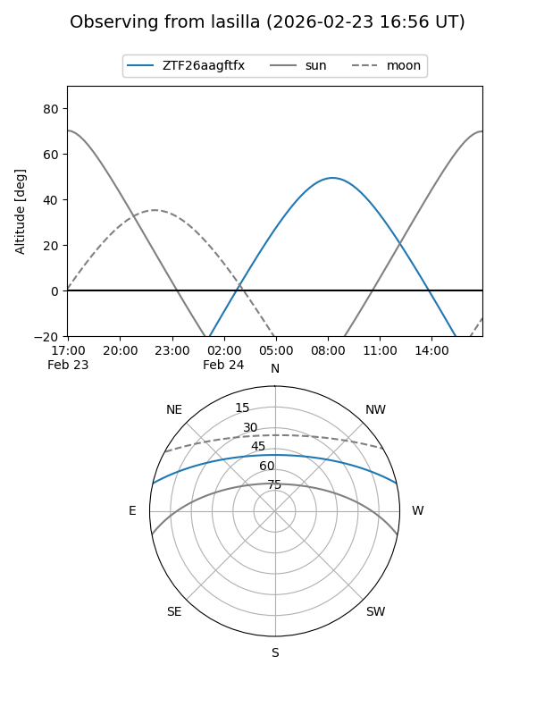
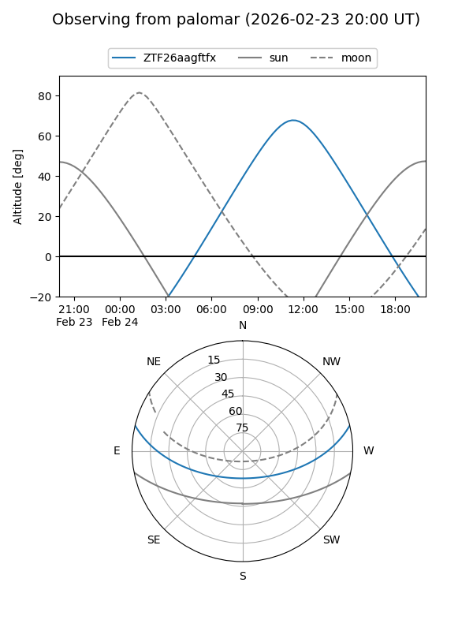

ZTF26aagftfx
Target ZTF26aagftfx at 2026-02-24 09:08
Aliases and brokers:
FINK: link
Lasair: link
ALeRCE: link
alt names
ZTF26aagftfx (ztf,fink_ztf)
Coordinates:
equatorial (ra, dec) = 207.4081,+11.33243
equatorial (HMS+DMS) = 13:49:37.94,+11:19:56.75
galactic (l, b) = (346.6173,+69.10839)
Flags:
Photometry:
last ztfg=19.94
1 ztfg detections
Lightcurve

Visibility


Additional plots